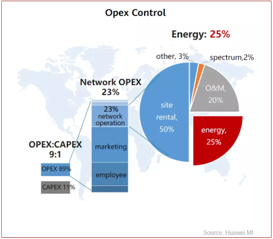
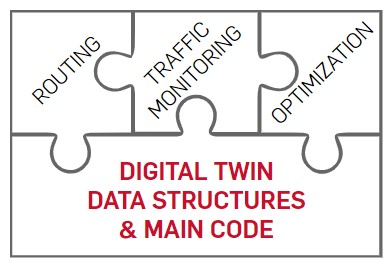
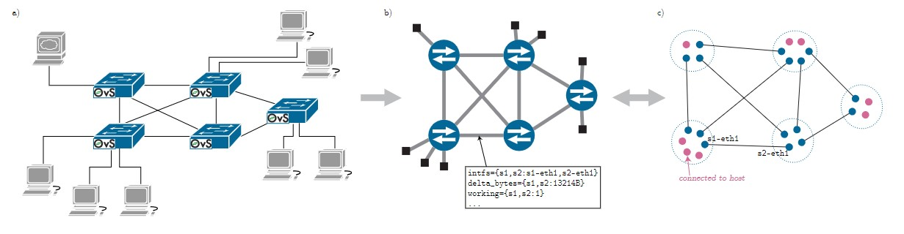
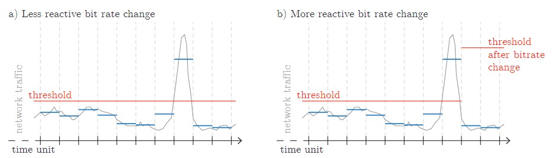
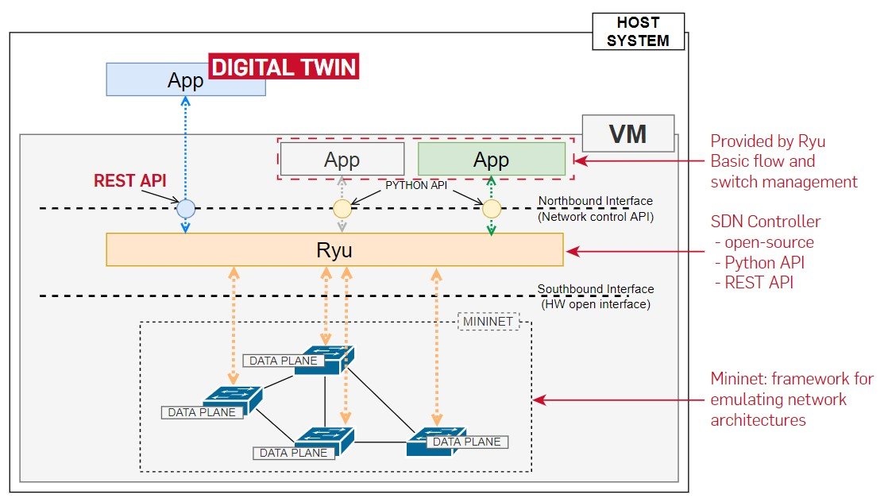
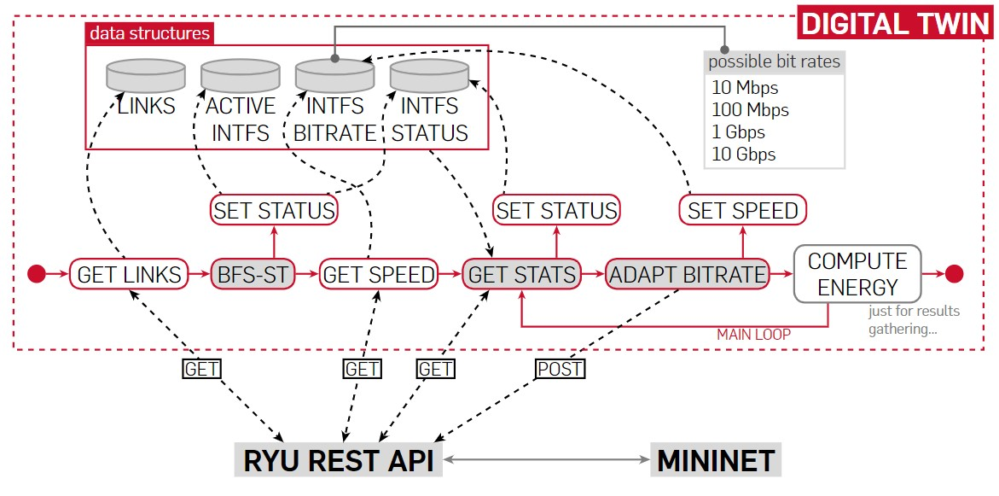

Network Digital Twin: bit rate control for energy saving
A brief presentation of my MSc degree thesis
This project is the subject of the final dissertation for the MSc in Computer Science at University of Trento, Italy. The final elaborate is titled "Implementing and running the Digital Twin of a network for energy consumption monitoring and optimization" and covers three main topics:
- - The problem of energy consumption in network architectures
- - Proposal of the structure of a Digital Twin of a network for traffic monitoring and energy-wise optimization
- - Development of the prototype of the D.T. and results achieved
The problem of energy consumption
When speaking about the costs of a network, we can divide them into two main parts: the capital expenditures (CapEx) and the operational expenses (OpEx). Various >10 years projections estimate that in general the OpEx can amount
to as much as 9 times the CapEx.
In particular, many reports show that an important part of the OpEx is due to the cost of energy needed by the network. This slice usually ranges between 15% and 50%.
The energy can be further divided in two parts: that needed by the structures (e.g. lighting in datacenters, cooling systems, etc.) and that needed by the network devices in order to work.
It has been observed that up to half of the energy consumption of a general network device (e.g. switch) is due to the number of active interfaces. More in details, studies [1] [2] demonstrated that the amount is strictly related to the working bit rate of each port, while being almost independent of the amount of traffic traversing it. In other words, once a cable is inserted in an interface and the LED status lights up, that port is consuming energy.
If we define as idle the interfaces that are active (i.e. wired and up) but aren't forwarding any traffic, it sounds logical that putting them in a temporary sleep mode or lowering their bit rate could be effective in terms of energy saving. In fact, some mechanisms for per-interface sleeping already exist (ALR and LPI), however the problem is that the device should be aware of them, otherwise the modified, and unsupported, L2 frame would cause the packet to be dropped.
Software Defined Networking offers the tools needed to exploit such strategies in a way that could be hardware independent, provided that the switches/routers support the SDN paradigm.
In conclusion, the ultimate goal of this project is to propose a way of implementing and running the Digital Twin of a network in order to:
- - monitor the traffic per-interface
- - adapt the bit rate of each interface depending on the traffic volume
The Digital Twin
What is a Digital Twin?
A digital twin is a real-time simulation of a real-world system (physical twin). The digital twin serves as a counterpart of the real twin and allows for modeling present and future scenarios based on a model that is constantly updated with real and live data.
Digital Twins are used in a large number of areas, from the aerospace industry to economics. This project focuses on a possible use in the telecommunications field.
One of the biggest challenges when developing a Digital Twin is dealing with the huge amount of data a system can generate. It is important to clearly define what the goal is, so that the effort is focused only on the needed data: bigger quantities require bigger resources to allow for real-time gathering and analysis.
The main idea
The main idea at the core of this project is that the Digital Twin can be seen as a puzzle: at the base there are the data structures and the main code, and on top of it routing, monitoring and optimization algorithm can be easily integrated.
Despite the main goal being that of providing a solid and efficient "base piece" of the puzzle, in combination with the monitoring "piece", I also developed some simple algorithms addressing the routing and the actual optimization problem, so to have a complete software that can be run in order to gather some results from testing environments.
Representing the network
The biggest problem when developing a D.T. is to find a smart way of representing the real system, that highlights just the features of interest. Since we need to act on the single interfaces in order to optimize their energy consumption, what I propose is an "interface-centric" model of the network.
The first and most complete way I came up with was that of representing the network as a graph where each node was an interface, and then cluster them up depending on the belonging to the switches. However this would be too complex to handle with large interfaces, so in the end the network is represented by a graph where the switches are the nodes, but what is important is the list of edges. Each edge, which represents a couple of wired ports, is then enriched with information that is interface specific. Ultimately all of this is what is stored and constantly updated in the data structures composing the D.T.
Routing, monitoring and optimization
As anticipated, all the pieces of the puzzle were implemented in order to have a functioning D.T. prototype.
Since a generic mesh topology will be used as testbed, it is necessary to break the loops in the network in order for it to work. To do so, a simple way of calculating the spanning tree was implemented. The spanning tree of the network is defined via a BFS visit of the graph, with the root being chosen as the switch that has the highest number of connections to other switches (its degree), combined with an important number of connections to terminal hosts. This is an attempt at having as few active links as possible, in order to maximize the energy saving with relation to usage.
The execution of the BFS-ST allows for the first definition of the interfaces’ status: they are now either in disabled or idle state. The status of an idle interface may change to working or saturated during the execution of the D.T. The difference between working and saturated is that a saturated port is a port that is working above a certain threshold of traffic volume.
Such threshold is defined as SENSITIVITY * port_speed where SENSITIVITY is a percentage decided a priori of the amount of traffic exchanged in a time unit at 1Mbps. E.g. if the digital twin time unit lasts 1 second and it is decided that if the link is half full , it needs more bitrate, the sensitivity will be 62500 B (50% of 1Mbps in 1s).
The status of the port, updated at each time unit based on the traffic monitoring, together with the amount of time a port has been in that status, determine if its bit rate must be changed.
The logic at the base of the optimization algorithm is greedy and kind of naive, and can be summed up as follows:
- - port_status = working --> keep current bit rate
- - port_status = saturated --> more bit rate
- - port_status = idle --> minimal bit rate
As anticipated, also the amount of time spent in a certain status is considered. It is important to find good values for it (or a good strategy to determine them) in order to have a D.T. that is just as reactive as needed.
Just to give an example of what the wrong values may cause, let’s consider the case where the D.T. gives more bit rate as soon as the status changes to saturated: if it is just a local peak that ends in the span of a single time unit, giving more bit rate would be a waste of energy since the link was already capable to handle the flow.

Actual implementation and testing

Since I didn’t have a real physical network to test the execution of the Digital Twin, I emulated one using Mininet, an open-source framework for network architectures emulation that supports the SDN paradigm.
I then used Ryu as SDN controller and in the end the Digital Twin is one of the SDN applications that execute on top of the controller.
DISCLAIMER - Mininet comes with an important limitation: the physical interfaces are emulated by virtual Ethernet interfaces, and the speed of this kind of interfaces is hardcoded in the Linux kernel to be 10 Gbps (source). Since it would be impractical to modify the Linux kernel, the solution proposed uses traffic control and quality of service mechanisms to emulate the actual change of bit rate of the interfaces.
The following diagram shows the main code flow of the developed Digital Twin, highlighting how the data structures are updated and used in the decision-making process.
The software was developed in Python and interacts with the SDN controller via the REST API that Ryu provides.
Simulation parameters
In order to estimate the energy required by each port at a certain bit rate, I used the table provided in this paper (and shown below). The values are really close to real ones that can be estimated by averaging the data sheets of various commercial switches by real vendors.
All the simulation runs were executed under the same “external” conditions:
- - 60 cycles (cycle duration ~ 3’’)
- - same traffic pattern and volume (emulated via iPerf)
- - same network topology (BFS-ST always returns the same result)
- - Base power for each switch: 20 W - just for plotting reasons (aesthetics...)
In the following paragraphs I present the results achieved in the 4 most significant runs.
PAGE UNDER CONSTRUCTION
Project information
- Category: Networking and Emulation
- Context: Master's Degree in Computer Science
- Project date: April to December, 2022
- Full text: PDF